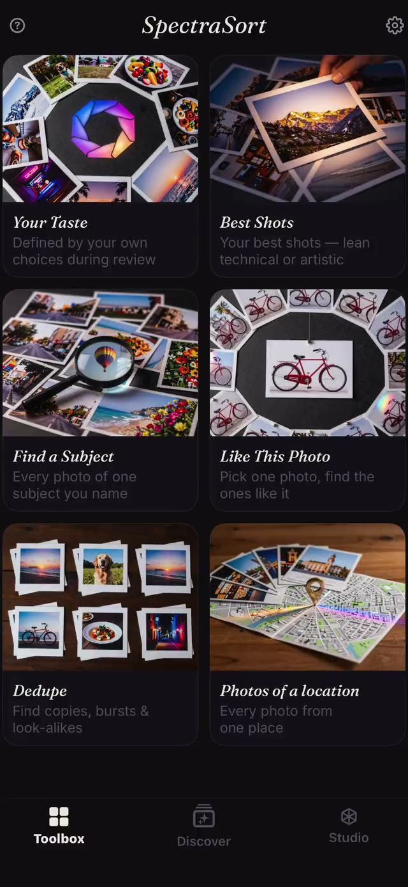
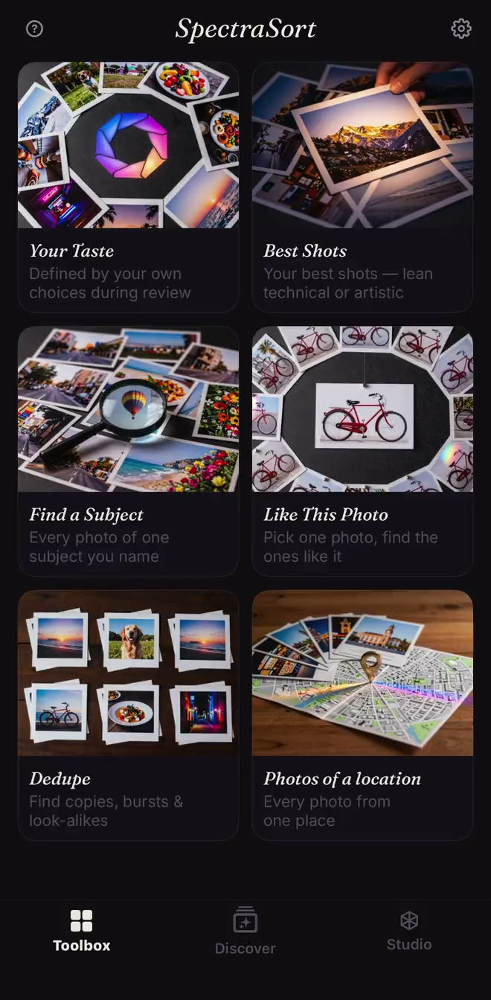
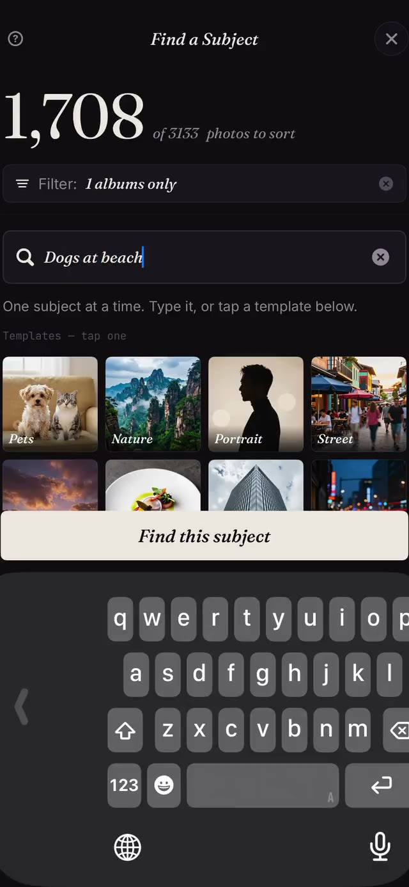
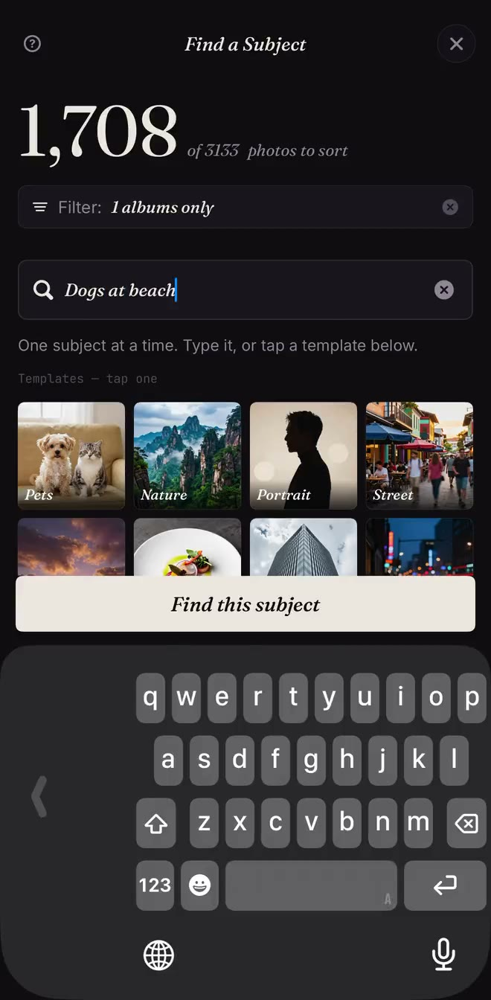
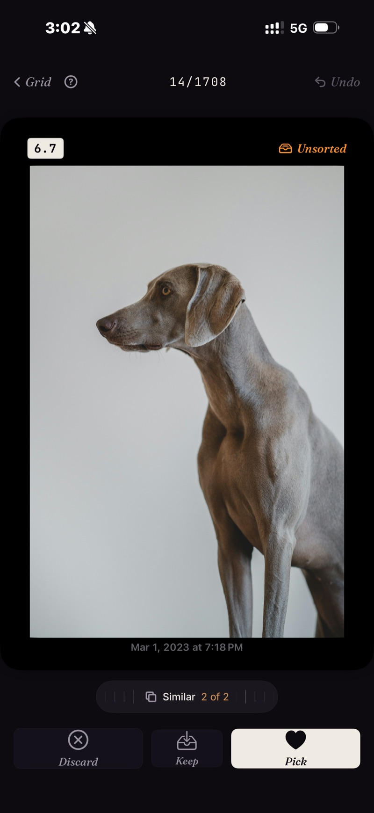
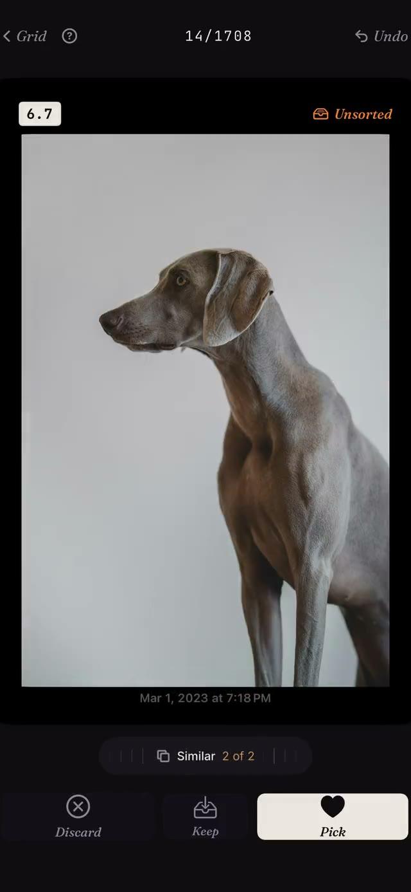
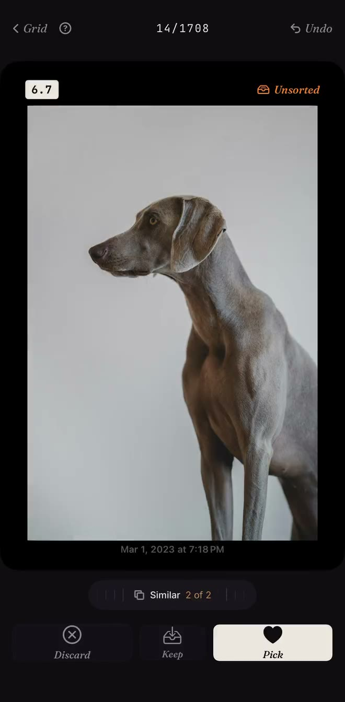

WAS — toolbox.jpg

Same .screen-card, same 318px slot, same --cap in every column — the frame is the only variable.
The middle column lost 39px off each side of the 1320-wide capture, because the old web profile (640×1386) was a narrower aspect than the source. The right column is 660×1344 = exactly half of the cropped capture, so the side crop is zero and the framing matches the still.







